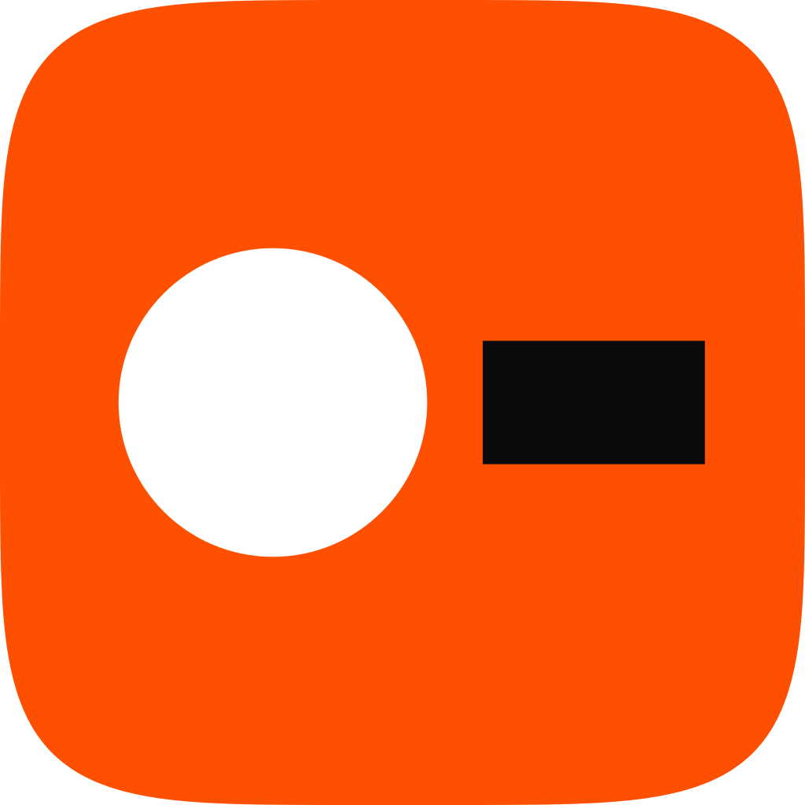

Jotto turns your Apple Watch into an everyday recording companion.
Tap the dot · or press space

Jotto is in beta on TestFlight. Bring your own API key, or use a Jotto subscription.
iOS 26 · watchOS 26